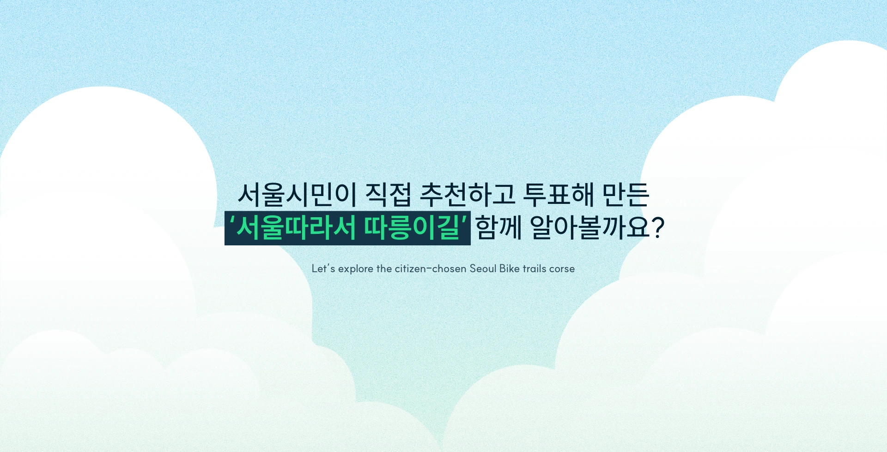

L o a d i n g . . .
자전거로 만나는 서울, 따릉이길
본 웹사이트는 크롬 브라우저와 데스크톱 환경에 맞춰 제작되었습니다. 화면 크기와 브라우저에 따라 일부 인터랙션이 다르게 보일 수 있습니다.
COPYRIGHT ⓒ 2026 1_je0.in_ All RIGHTS RESERVED.

여행을 시작해볼까요?
아래로 내려 따릉이길을 만나보세요
나와 맞는 코스를 찾아볼까?
외부 페이지로 이동합니다.